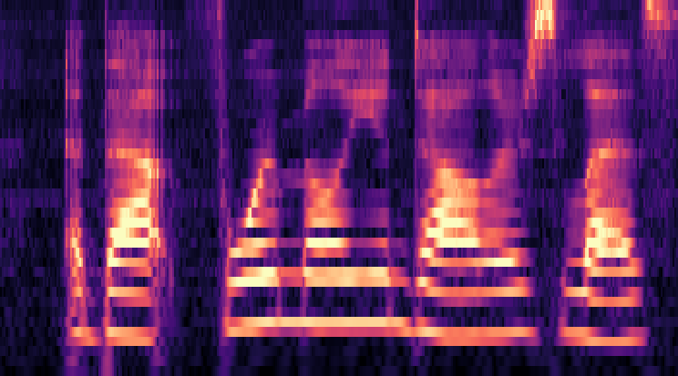
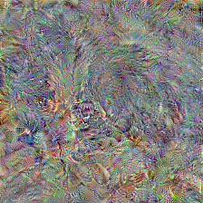
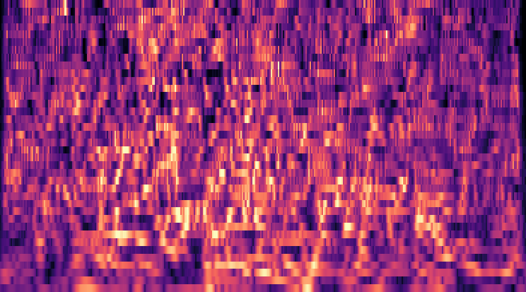
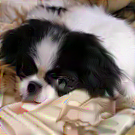
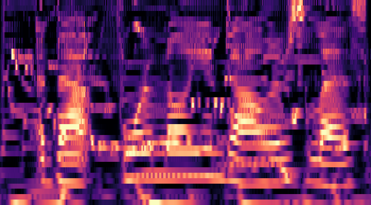

Adversarial training
Image
late stage
Sound
late stage
Natural

Matched to
standard network


Matched to
robust network


Expected:
less vulnerable to adversarial perturbations
Not expected:
stimuli generated by matching the activations of robust networks look and sound much more recognizable to humans. It is not clear why.
Does adversarial training improve the models’ alignment with the brain?
Goodfellow et al. (2015); Madry et al. (2018)
Feather et al. (2023)